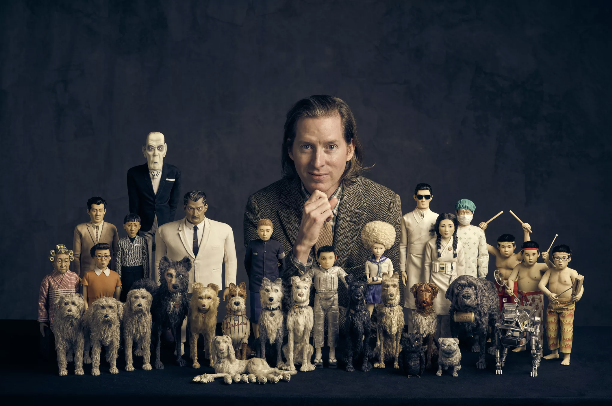

Wes Anderson is an American film director, screenwriter, and producer known for creating one of the most distinctive visual styles in modern cinema. Born in Houston, Texas in 1969, he began making short films with his friends as a teenager. After studying philosophy at the University of Texas, he met future collaborator Owen Wilson — a partnership that launched his filmmaking career.
Over the years, Wes Anderson has developed...
Over the years, Wes Anderson has developed a reputation as a true auteur — a filmmaker whose movies are instantly identifiable not by plot, but by feeling.
★★★
His work blends whimsy with melancholy, precision with chaos, and storytelling with visual poetry. This is why his cinema is not just watched — it is experienced.